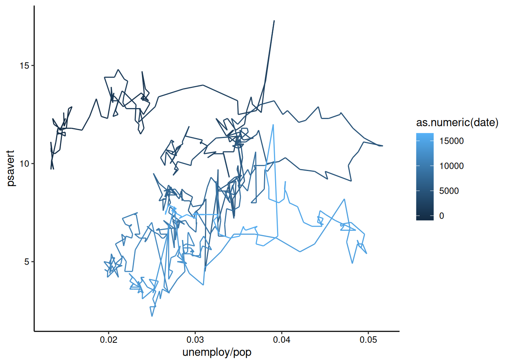

# load the ggplot2 package
library(ggplot2)Example R Unit
[UNIT LONG NAME]
Introduction
While you can make plots with just the packages that come bundled with base R, many R users make their visualizations entirely using the ggplot2 package and an ecosystem of packages designed around it.
As with the previous session, we’ll be using the Palmer penguins dataset. While we built our own combined dataset in the introduction session, now we’re going to use the built-in raw dataset included in the palmerpenguins package (install this first if you don’t have it yet). First, let’s load the package. By loading the package, it gives us access to the penguins_raw data object that is included (notice that it isn’t shown in our Global Environment, but you can see it in the environment of the palmerpenguins package). Let’s inspect the data using the glimpse() function (we’ll learn more about the dplyr package in the next session).
library(palmerpenguins)
Attaching package: 'palmerpenguins'The following objects are masked from 'package:datasets':
penguins, penguins_rawdplyr::glimpse(penguins_raw)Rows: 344
Columns: 17
$ studyName <chr> "PAL0708", "PAL0708", "PAL0708", "PAL0708", "PAL…
$ `Sample Number` <dbl> 1, 2, 3, 4, 5, 6, 7, 8, 9, 10, 11, 12, 13, 14, 1…
$ Species <chr> "Adelie Penguin (Pygoscelis adeliae)", "Adelie P…
$ Region <chr> "Anvers", "Anvers", "Anvers", "Anvers", "Anvers"…
$ Island <chr> "Torgersen", "Torgersen", "Torgersen", "Torgerse…
$ Stage <chr> "Adult, 1 Egg Stage", "Adult, 1 Egg Stage", "Adu…
$ `Individual ID` <chr> "N1A1", "N1A2", "N2A1", "N2A2", "N3A1", "N3A2", …
$ `Clutch Completion` <chr> "Yes", "Yes", "Yes", "Yes", "Yes", "Yes", "No", …
$ `Date Egg` <date> 2007-11-11, 2007-11-11, 2007-11-16, 2007-11-16,…
$ `Culmen Length (mm)` <dbl> 39.1, 39.5, 40.3, NA, 36.7, 39.3, 38.9, 39.2, 34…
$ `Culmen Depth (mm)` <dbl> 18.7, 17.4, 18.0, NA, 19.3, 20.6, 17.8, 19.6, 18…
$ `Flipper Length (mm)` <dbl> 181, 186, 195, NA, 193, 190, 181, 195, 193, 190,…
$ `Body Mass (g)` <dbl> 3750, 3800, 3250, NA, 3450, 3650, 3625, 4675, 34…
$ Sex <chr> "MALE", "FEMALE", "FEMALE", NA, "FEMALE", "MALE"…
$ `Delta 15 N (o/oo)` <dbl> NA, 8.94956, 8.36821, NA, 8.76651, 8.66496, 9.18…
$ `Delta 13 C (o/oo)` <dbl> NA, -24.69454, -25.33302, NA, -25.32426, -25.298…
$ Comments <chr> "Not enough blood for isotopes.", NA, NA, "Adult…As we discovered before, this dataset includes many different measurements for individual penguins from three different studies. The studies cover both sexes of three different species of penguins from three different islands in the Palmer Archipelago.
The ggplot2 basics
The most important function in the ggplot2 package is ggplot(). Note that this function doesn’t include the “2” of the package name. Let’s go ahead and try using this function on our penguins data.
ggplot(penguins_raw)
You’ll notice that the ggplot() function doesn’t actually do much by itself. Here, we provide it with the penguins dataset, but the result looks like someone started making a plot and then stopped after the first step of making the rectangle for the plot area. This is because ggplot2 is designed around the “grammar of graphics”. Therefore, it expects you to build a sentence-like structure out of its functions. A single word (i.e., the call to ggplot() above) doesn’t make much of a sentence, so let’s start building up a real sentence.
By using the ggplot() function, we are essentially stating that we are beginning a plotting “sentence”. We then combine this with other “words” (function calls) using the + operator. The next component you usually want to specify in a ggplot “sentence” is our “aesthetic” mappings. These specify the columns of the dataset that correspond to each axis of the plot, including the x/y axes, but also the axes of color, shape, etc. We do this with the aes() function:
ggplot(penguins_raw) +
aes(x = `Body Mass (g)`, y = `Flipper Length (mm)`)
Spaces in column names
Note that here we had to use the “`” symbol around the column names because the column names include spaces. If there are no spaces in your column names, you would just write out their names with no quotes or apostrophes. We’ll discuss more about proper column names in the next session.
Hey, it’s starting to look like a plot now! Except there isn’t any actual data being plotted. Let’s fix that. We’ll start off with a simple scatter plot by using the geom_point() function:
ggplot(penguins_raw) +
aes(x = `Body Mass (g)`, y = `Flipper Length (mm)`) +
geom_point()Warning: Removed 2 rows containing missing values or values outside the scale range
(`geom_point()`).And there we go! You’ll notice that with just a few lines, we’ve already made a pretty nice visualization of this penguin data. ggplot2 does most of the work for us once we specify our dataset and our x and y variables.
Missing data
You may have noticed a warning that some rows of the dataset contain missing values. We’ll discuss this further in the next session, but for now we’ll just ignore this warning.
Now, let’s go a step further and color the points by another variable (e.g., the island of the penguins). With ggplot2, all that requires is specifying another aesthetic:
ggplot(penguins_raw) +
aes(x = `Body Mass (g)`, y = `Flipper Length (mm)`, color = Island) +
geom_point()Warning: Removed 2 rows containing missing values or values outside the scale range
(`geom_point()`).Notice that ggplot2 comes with its own default color scheme. However, I would strongly discourage you from using the default colors, especially as the number of categories increases (with only 3 categories here it isn’t too bad). Let’s try out some of the more accessible color palettes that are also available in R.
First, let’s try one of the viridis color palettes. Since this palette is included in ggplot2, all we need to do is add the proper “scale” to our ggplot() call. Scales tell ggplot how to handle a particular aesthetic, and are usually of the form scale_[aesthetic]_[type]().
ggplot(penguins_raw) +
aes(x = `Body Mass (g)`, y = `Flipper Length (mm)`, color = Island) +
geom_point() +
scale_color_viridis_d(end = 0.7) # avoid yellow at the end of the paletteWarning: Removed 2 rows containing missing values or values outside the scale range
(`geom_point()`).Now let’s try one of the brewer color palettes.
ggplot(penguins_raw) +
aes(x = `Body Mass (g)`, y = `Flipper Length (mm)`, color = Island) +
geom_point() +
scale_color_brewer(palette = "Set1")Warning: Removed 2 rows containing missing values or values outside the scale range
(`geom_point()`).
Outside of color, there are many other aspects of the graph that we can modify using “scale”s. For example, we can modify the shape of the points:
ggplot(penguins_raw) +
aes(x = `Body Mass (g)`, y = `Flipper Length (mm)`,
color = Island, shape = Sex) +
geom_point() +
scale_color_brewer(palette = "Set1")Warning: Removed 11 rows containing missing values or values outside the scale range
(`geom_point()`).And the x/y axes:
ggplot(penguins_raw) +
aes(x = `Body Mass (g)`, y = `Flipper Length (mm)`,
color = Island, shape = Sex) +
geom_point() +
scale_color_brewer(palette = "Set1") +
scale_x_continuous(name = "Body Mass (grams)") +
scale_y_continuous(name = "Flipper Length (millimeters)")Warning: Removed 11 rows containing missing values or values outside the scale range
(`geom_point()`).Theming
The last basic thing you might want to do with ggplot2 is modify the style of the visualization. This is extremely customizable, but the first place to start is with a built-in theme. I personally prefer the classic theme, which looks very similar to base R plots:
ggplot(penguins_raw) +
aes(x = `Body Mass (g)`, y = `Flipper Length (mm)`,
color = Island, shape = Sex) +
geom_point() +
scale_color_brewer(palette = "Set1") +
scale_x_continuous(name = "Body Mass (grams)") +
scale_y_continuous(name = "Flipper Length (millimeters)") +
theme_classic()Warning: Removed 11 rows containing missing values or values outside the scale range
(`geom_point()`).Using this built-in theme has changed many visual aspects of the graph, including changing the plot background color, adding axis lines, and removing the internal grid lines. If you look very closely, however, the axis tick labels are still a slight grey. We can use the theme() function to further customize the appearance and change this. In this case, we’ll make the axis text elements have a black color instead of the default gray.
ggplot(penguins_raw) +
aes(x = `Body Mass (g)`, y = `Flipper Length (mm)`,
color = Island, shape = Sex) +
geom_point() +
scale_color_brewer(palette = "Set1") +
scale_x_continuous(name = "Body Mass (grams)") +
scale_y_continuous(name = "Flipper Length (millimeters)") +
theme_classic() +
theme(axis.text = element_text(color = "black"))Warning: Removed 11 rows containing missing values or values outside the scale range
(`geom_point()`).And there we have it! With just 9 lines we’ve created what I would say is a publication quality graph! ggplot does a lot of the tedious work for us, giving us time to focus on the more important aspects, such as labeling and color. Admittedly, I’ve spent a LOT of time on these aspects in the past…
More information about all of the hierarchical theme components that you can customize is available here. In order to change many of these components, you need to use theme elements like we did above with element_text(). That and other theme elements are documented here.
More complex features
Other layers
There are many other types of plots that we can make with ggplot2.
Histograms
We can visualize the density of values for a single variable with a histogram:
ggplot(penguins_raw) +
aes(x = `Body Mass (g)`, fill = Species) +
geom_histogram() +
theme_classic() +
theme(axis.text = element_text(color = "black"))`stat_bin()` using `bins = 30`. Pick better value with `binwidth`.Warning: Removed 2 rows containing non-finite outside the scale range
(`stat_bin()`).
Note
Histograms don’t require a y-axis aesthetic by default. The counts are tabulated for you. If you specify a “fill” aesthetic, the default is to stack the bars which can sometimes be a bit misleading. You can also dodge them to fix this:
ggplot(penguins_raw) +
aes(x = `Body Mass (g)`, fill = Species) +
geom_histogram(position = "dodge") +
theme_classic() +
theme(axis.text = element_text(color = "black"))`stat_bin()` using `bins = 30`. Pick better value with `binwidth`.Warning: Removed 2 rows containing non-finite outside the scale range
(`stat_bin()`).Boxplots and Violin Plotss
We can visualize the density of values for a single variable across a discrete variable with boxplots or violin plots:
ggplot(penguins_raw) +
aes(x = Island, y = `Culmen Length (mm)`) +
geom_boxplot() +
theme_classic() +
theme(axis.text = element_text(color = "black"))Warning: Removed 2 rows containing non-finite outside the scale range
(`stat_boxplot()`).ggplot(penguins_raw) +
aes(x = Island, y = `Culmen Length (mm)`) +
geom_violin(scale = "width", draw_quantiles = c(0.25, 0.5, 0.75)) +
theme_classic() +
theme(axis.text = element_text(color = "black"))Warning: Removed 2 rows containing non-finite outside the scale range
(`stat_ydensity()`).
Geom options
Note that many of these “geom”s have lots of options. For example, here we’ve decided to scale all of the violin plots to the same width and to draw the quartiles on them (mimicking the boxplots above). You can see all of the options for a geom by checking out it’s help page (?geom_violin) or on the ggplot website.
2D Contours
We can also visualize the density of values across two continuous variables using a 2D contour. Here we’ll use the isotope data from the penguins dataset. We’ll expand the axes a little bit to better show the contours:
ggplot(penguins_raw) +
aes(x = `Delta 15 N (o/oo)`, y = `Delta 13 C (o/oo)`) +
geom_density_2d(linewidth = 0.25, colour = "black") +
scale_x_continuous(limits = c(7, 10.5)) +
scale_y_continuous(limits = c(-27.5, -23.5)) +
theme_classic() +
theme(axis.text = element_text(color = "black"))Warning: Removed 14 rows containing non-finite outside the scale range
(`stat_density2d()`).Time Series
Since there isn’t really any time series data in the penguins dataset, we’ll take a quick detour and use the built-in economics dataset to explore visualizing a time series. In this case, we are looking at unemployment over time:
ggplot(economics, aes(x = date, y = unemploy)) +
geom_line() +
theme_classic() +
theme(axis.text = element_text(color = "black"))geom_path() lets you explore how two variables are related over time. For example, unemployment and personal savings rate:
ggplot(economics, aes(x = unemploy / pop, y = psavert)) +
geom_path(aes(colour = as.numeric(date))) +
theme_classic() +
theme(axis.text = element_text(color = "black"))
Multiple columns for individual aesthetics
Note how we’ve used multiple columns of the data to define the x-axis here. You can use any sort of mathetical operators to combine multiple columns into a single aesthetic, as long as you are doing row-wise math. We’ll learn about summary statistics for groups of rows in the next session.
Combining layers
We can also combine multiple layers to show the same data in different ways in the same plot. For example, we could show the raw data for the above contour plot in addition to the contours:
ggplot(penguins_raw) +
aes(x = `Delta 15 N (o/oo)`, y = `Delta 13 C (o/oo)`) +
geom_point() +
geom_density_2d_filled(alpha = 0.5) +
geom_density_2d(linewidth = 0.25, colour = "black") +
scale_x_continuous(limits = c(7, 10.5)) +
scale_y_continuous(limits = c(-27.5, -23.5)) +
coord_cartesian(expand = FALSE) +
theme_classic() +
theme(axis.text = element_text(color = "black"))Warning: Removed 14 rows containing non-finite outside the scale range
(`stat_density2d_filled()`).Warning: Removed 14 rows containing non-finite outside the scale range
(`stat_density2d()`).Warning: Removed 14 rows containing missing values or values outside the scale range
(`geom_point()`).
Layer order
When combining layers, the layers are added to the plot in order, so in this case the points are the bottom layer and the contour lines are the top layer. We changed the alpha of the middle layer to prevent the points from being blocked. I’ve also used the coord_cartesian() function to remove the default axis expansion. This way the background color reaches both axes and doesn’t have a white gap.
Facetting
Let’s take our scatterplot example from earlier:
ggplot(penguins_raw) +
aes(x = `Body Mass (g)`, y = `Flipper Length (mm)`,
color = Island, shape = Sex) +
geom_point() +
scale_color_brewer(palette = "Set1") +
scale_x_continuous(name = "Body Mass (grams)") +
scale_y_continuous(name = "Flipper Length (millimeters)") +
theme_classic() +
theme(axis.text = element_text(color = "black"))Warning: Removed 11 rows containing missing values or values outside the scale range
(`geom_point()`).
Now, what if we wanted to also split the data by the species of the penguins? We’re already using color and shape, so what other aesthetic could we use? We could possible use some shapes that have both a fill and outline color, but that sounds messy. Instead of using another aesthetic, we could also use a facet. This splits the chart into multiple panels:
ggplot(penguins_raw) +
aes(x = `Body Mass (g)`, y = `Flipper Length (mm)`,
color = Island, shape = Sex) +
geom_point() +
scale_color_brewer(palette = "Set1") +
scale_x_continuous(name = "Body Mass (grams)") +
scale_y_continuous(name = "Flipper Length (millimeters)") +
facet_wrap(vars(Species), ncol = 1) +
theme_classic() +
theme(axis.text = element_text(color = "black"))Warning: Removed 11 rows containing missing values or values outside the scale range
(`geom_point()`).We can get even crazier by faceting by multiple variables:
ggplot(penguins_raw) +
aes(x = `Body Mass (g)`, y = `Flipper Length (mm)`,
color = Island, shape = Sex) +
geom_point() +
scale_color_brewer(palette = "Set1") +
scale_x_continuous(name = "Body Mass (grams)") +
scale_y_continuous(name = "Flipper Length (millimeters)") +
facet_grid(rows = vars(Species), cols = vars(studyName)) +
theme_classic() +
theme(axis.text = element_text(color = "black"))Warning: Removed 11 rows containing missing values or values outside the scale range
(`geom_point()`).OK, maybe we’ve gone a little too far here, but you get the picture!
Combining plots
When publishing results, often we need to combine multiple figures into a single visualization. There are lots of packages for accomplishing this (even my own deeptime package has some functionality for it), but today we’ll check out the patchwork package which extends the “grammar of graphics” to combining plots (you may need to install it if you haven’t done so already).
library(patchwork)First, let’s go ahead and make some plots. Instead of plotting them, though, we’ll save them as objects in our environment. Note that when you save a plot to an object it isn’t displayed in the “Plots” tab.
g1 <- ggplot(penguins_raw) +
aes(x = `Body Mass (g)`, y = `Flipper Length (mm)`) +
geom_point() +
theme_classic() +
theme(axis.text = element_text(color = "black"))
g2 <- ggplot(penguins_raw) +
aes(x = `Delta 15 N (o/oo)`, y = `Delta 13 C (o/oo)`) +
geom_point() +
geom_density_2d_filled(alpha = 0.5, show.legend = FALSE) +
geom_density_2d(linewidth = 0.25, colour = "black") +
scale_x_continuous(limits = c(7, 10.5)) +
scale_y_continuous(limits = c(-27.5, -23.5)) +
coord_cartesian(expand = FALSE) +
theme_classic() +
theme(axis.text = element_text(color = "black"))Now, in order to combine these, all we need to do is combine them using the + operator, like we did with the individual elements of the plots.
g1 + g2Warning: Removed 2 rows containing missing values or values outside the scale range
(`geom_point()`).Warning: Removed 14 rows containing non-finite outside the scale range
(`stat_density2d_filled()`).Warning: Removed 14 rows containing non-finite outside the scale range
(`stat_density2d()`).Warning: Removed 14 rows containing missing values or values outside the scale range
(`geom_point()`).You can see that patchwork does all of the work for us, lining up the different components of the plots. If we have more plots to combine, we can then use the | and / operators to make more complex arrangements of plots.
g3 <- ggplot(penguins_raw) +
aes(x = Island, y = `Culmen Length (mm)`) +
geom_boxplot() +
theme_classic() +
theme(axis.text = element_text(color = "black"))
(g1 | g2) / g3Warning: Removed 2 rows containing missing values or values outside the scale range
(`geom_point()`).Warning: Removed 14 rows containing non-finite outside the scale range
(`stat_density2d_filled()`).Warning: Removed 14 rows containing non-finite outside the scale range
(`stat_density2d()`).Warning: Removed 14 rows containing missing values or values outside the scale range
(`geom_point()`).Warning: Removed 2 rows containing non-finite outside the scale range
(`stat_boxplot()`).There’s a lot more you can do with patchwork, including adjusting the widths and heights, but we’ll stop here for now.
Saving plots
The last big thing you’ll need to know about plotting is how to save your plots. ggplot2 comes with a nifty ggsave() function which you can use to save your plots in a number of different formats. Here we’ll save our most recent combined plot as both a PDF and a JPEG. The former is a vector format, meaning all of the elements of the figure as geometric shapes, and, because of this, none of the data is lost (aka “lossless”). The latter is a raster format, meaning the figure is converted to a 2-D array of colored pixels of a desired size, and because of this, some of the data is lost in the process (aka “lossy”). This results in the pixellation that you see when you zoom in on a JPEG. ggsave() detects what format you want based on the file extension, so we just need to specify the file location and the object to be saved (and optionally the dimensions of the output file). It’s usually a good idea to keep all figures in their own folder (which was already created for you).
gg <- (g1 | g2) / g3
ggsave("figures/penguins_1.pdf", gg, height = 10, width = 10)
ggsave("figures/penguins_1.jpg", gg, height = 10, width = 10)Now we’ll once again use the git tools within RStudio to commit these files and push them to our GitHub repository. Click on the “Git” tab in the top-right. Clicking this tab will show you all of the files that have been modified since we last committed. In this case, you should see your code file (modified from our last session) and your two new figures. Click the boxes next to these three files to queue them for committing. Then click the Commit button. Write a succinct commit message in the window, then click the Commit button, then the Push button. And that’s that!